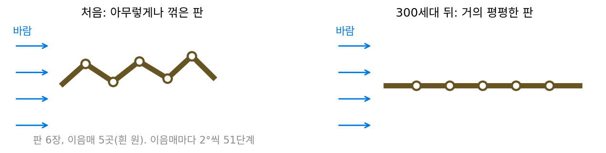
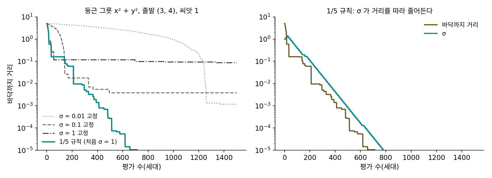

진화 전략: 스텝 크기를 스스로 맞추는 1/5 규칙
유전 알고리즘은 문자열의 0과 1을 뒤집었다. 그런데 답이 연속인 값이면, 예를 들어 판 여러 장을 이어 붙인 날개의 이음매 각도라면 「뒤집기」 대신 「조금 돌리기」가 자연스럽다. 지금 각도에 작은 무작위 값을 더해 보고 좋아지면 받아들이는 것인데, 그러면 그 작은 무작위 값은 얼마나 작아야 하느냐는 물음이 곧바로 생긴다. 너무 작으면 거의 매번 좋아지지만 한 번에 조금씩밖에 못 가고, 너무 크면 크게 가지만 좋아지는 일이 드물다. 게다가 바닥에 가까워질수록 알맞은 크기도 달라질 텐데, 그 크기를 사람이 미리 정하지 않고 탐색이 스스로 맞출 수는 없을까?
역사: 바람 터널의 꺾인 판
1964년 여름(바이어와 슈베펠의 정리로는 6월), 베를린 공과대학의 바람 터널에서 학생이던 잉고 레헨베르크(Ingo Rechenberg)와 한스파울 슈베펠(Hans-Paul Schwefel)을 비롯한 학생들이 실험을 하나 했다. 길쭉한 판 여섯 장을 긴 모서리끼리 이어 붙이고, 다섯 군데 이음매를 2°씩 51단계로 꺾을 수 있게 만들었다. 판이 취할 수 있는 모양은 51⁵ = 345,025,251가지다. 판을 아무렇게나 지그재그로 꺾어 놓고, 바람이 판을 미는 힘(저항)이 가장 작은 모양을 찾는 것이 목표였다. 답이 평평한 판이라는 것은 이미 알고 있었다. 실험의 목적은 답을 찾는 것이 아니라, 생물의 진화에서 빌려 온 두 규칙만으로 그 답에 얼마나 빨리 닿는지 보는 것이었다.
규칙은 정말 둘뿐이었다. 모든 이음매를 조금씩 무작위로 바꾼 뒤, 저항이 늘지 않았으면 바꾼 모양을 남기고 늘었으면 되돌린다. 회의적인 사람들은 수백만 번은 해야 할 것이라고 내다봤다. 레헨베르크가 2000년에 돌아보며 적은 바에 따르면, 첫 실험에서는 80세대와 180세대 사이에 한동안 제자리걸음을 했지만 300세대 만에 판은 기술적으로 평평하다고 할 만한 모양이 되었고, 그 뒤 실험들은 대개 200세대 안에 끝났다. 슈베펠과 함께 쓴 정리(바이어·슈베펠, 2002)는 이 단순한 무작위 규칙이 수치 해석에서 빌려 온 「한 변수씩 고치기」나 「차분으로 그래디언트를 어림해 내려가기」보다 나았다고 적었다. 그 정리는 이 실험이 노이즈가 끼고 좋은 자리가 여럿인 조건에서 이루어졌다고 적는다. 잴 때마다 저항 값이 조금씩 달라지면 두 값의 차이로 구한 그래디언트가 그 노이즈에 묻힌다는 것은 유한 차분에서 본 것과 같다.

곧 문제가 드러났다. 슈베펠은 1965년 졸업 논문에서 바꾸는 양을 정수 칸 단위(이항 분포)로 뽑는 방식을 포물선 모양으로 휜 산등성이 함수 위에서 시험했고, 탐색이 어떤 자리에서는 꼼짝 못 한다는 것을 보았다. 바로 옆 칸들이 모두 더 나쁘고, 더 멀리 뛰어야 좋아지는데 그런 큰 바꿈은 거의 나오지 않았다. 그래서 바꾸는 양을 연속인 정규분포에서 뽑게 되었다. 그 뒤 슈베펠은 330개의 고리 조각을 갈아 끼우는 방식으로 뜨거운 물과 증기가 섞여 나가는 노즐의 모양을 같은 규칙으로 400세대 동안 다듬었고, 효율은 55%에서 80% 가까이로 올랐다. 다 다듬은 노즐은 안쪽이 이상하게 불룩불룩해서, 유체 역학자들이 한동안 왜 그런 모양이 나왔는지 궁리했다.
남은 물음은 바꾸는 양의 크기였다. 레헨베르크는 1971년 박사 논문(1973년 책 『진화 전략(Evolutionsstrategie)』)에서 둥근 그릇과 좁은 통로라는 두 가지 함수를 계산으로 따졌다. 두 함수 모두에서, 한 세대에 가장 멀리 나아가게 하는 바꿈의 크기는 「바꾼 것이 성공할 확률」이 일정한 값일 때였다. 그 성공 확률은 둥근 그릇에서 약 0.27(차원이 아주 클 때), 좁은 통로에서 약 0.184였다. 그는 둘 사이의 0.2를 골라, 성공 비율이 1/5보다 크면 바꿈의 크기를 키우고 작으면 줄이라는 규칙을 내놓았다.
둥근 그릇을 한 점으로 내려가기
이 규칙이 무엇을 해 주는지 가장 깨끗하게 보려면 바닥이 하나뿐이고 어느 방향으로나 똑같이 휜 함수가 좋다. 둥근 그릇 f(x, y) = x² + y²를 (3, 4)에서, 곧 바닥까지 거리 5인 자리에서 내려가 보자. 부모 한 점에 표준편차가 σ(시그마)인 정규분포 노이즈를 좌표마다 더해 자식 한 점을 만들고, 자식이 부모보다 나쁘지 않으면 자식으로 바꾼다. 한 세대에 함수 값을 한 번 재고, 바닥까지 거리 0.0001 안에 들면 목표에 닿은 것으로 친다. 씨앗 열 개로 돌린 결과는 다음과 같다.
| 규칙 | 처음 σ | 목표까지 평가 수(중앙값) | 300번 뒤 바닥까지 거리(중앙값) | 처음 300번의 성공 비율 |
|---|---|---|---|---|
| σ 고정 | 0.01 | 열 번 가운데 네 번만 닿음 | 3.786 | 0.501 |
| σ 고정 | 0.1 | 2만 번 안에 못 닿음 | 0.009894 | 0.222 |
| σ 고정 | 1 | 2만 번 안에 못 닿음 | 0.04755 | 0.032 |
| 1/5 규칙 | 0.01 | 614 | 0.0137 | 0.350 |
| 1/5 규칙 | 1 | 532 | 0.003503 | 0.050 |
| 1/5 규칙 | 10 | 642 | 0.02015 | 0.036 |
σ를 0.01로 고정하면 절반은 성공하지만 한 번에 0.01쯤밖에 못 가서 300번 뒤에도 거리가 3.8이나 남는다. 0.1로 고정하면 처음에는 빨리 가다가, 바닥까지 거리가 σ보다 작아지자 거의 모든 자식이 바닥을 지나쳐 버린다. 씨앗 1로 보면 처음 100세대의 성공 비율은 0.42였는데 1001~2000세대에서는 0.001로 떨어졌고, 2000세대 뒤의 거리는 0.00076이었다. 큰 σ는 멀리서는 좋고 가까이서는 쓸모가 없다.
1/5 규칙은 처음 σ를 0.01에서 10까지 천 배 다르게 잡아도 500~650번 안팎에 목표에 닿는다. 열 세대마다 성공 횟수를 세어 두 번보다 많으면 σ를 0.85로 나누고, 두 번보다 적으면 0.85를 곱했다(0.85는 슈베펠이 차원이 30 이상일 때 권한 범위 0.85 ≤ a < 1의 아래 끝이다. 2차원에 맞춰 고른 값은 아니다). 씨앗 1, 처음 σ = 1로 세대마다 보면 다음과 같다.
| 세대 k | 바닥까지 거리 | σ | 거리 ÷ σ |
|---|---|---|---|
| 0 | 5 | 1 | 5.000 |
| 20 | 0.5865 | 1.384 | 0.424 |
| 100 | 0.1608 | 0.3771 | 0.426 |
| 300 | 0.005154 | 0.02023 | 0.255 |
| 500 | 0.0002708 | 0.0007842 | 0.345 |
| 600 | 0.00005474 | 0.0001544 | 0.355 |
거리가 5에서 0.00005까지 10만 분의 1 가까이 줄어드는 동안 σ도 따라 줄어서, 마지막 칸의 거리 ÷ σ는 표의 20세대 뒤로 0.25~0.43 사이에 머문다. 표에서 뺀 50세대(0.189)와 200세대(0.584)까지 넣어도 0.2~0.6 언저리다. 성공 비율만 세었을 뿐 바닥이 어디인지는 한 번도 묻지 않았는데도, 스텝의 크기가 남은 거리에 비례하도록 저절로 맞춰진 것이다.
이렇게 한 점(또는 여러 점)에 정규분포 노이즈를 더해 자식을 만들고 나은 쪽을 남기면서, 노이즈의 크기 σ도 탐색 도중에 고쳐 가는 방법을 진화 전략 (노이즈를 더해 보고 나은 쪽을 남기기 / evolution strategy)이라 한다. 위처럼 부모 하나와 자식 하나 가운데 나은 쪽을 남기는 가장 단순한 꼴을 (1+1)-진화 전략이라 부른다.
ε(엡실론)는 평균 0, 표준편차 1인 노이즈고, σ를 곱해야 실제 스텝이 된다. 성공 비율은 자식이 부모보다 나쁘지 않았던 세대의 비율인데, 성공이 잦다는 것은 스텝이 바닥까지 거리에 비해 작다는 신호이고, 성공이 드물다는 것은 스텝이 너무 커서 바닥을 자꾸 지나친다는 신호다. 1/5 규칙은 이 신호 하나로 σ를 곱해서 고친다.

ML에서: 학습 도중에 하이퍼파라미터 고치기
딥마인드의 맥스 재더버그(Max Jaderberg)와 동료들은 2017년 논문 「신경망의 개체군 기반 학습(Population Based Training)」에서 같은 신경망을 하이퍼파라미터만 다르게 여러 개 함께 학습시키다가, 일정한 스텝마다 고르기와 조금 바꾸기를 했다. 강화학습 실험에서는 성적이 아래 20%인 모델이 위 20% 가운데 하나의 가중치와 하이퍼파라미터를 모두 베껴 오고(고르기), 베낀 하이퍼파라미터를 하나씩 1.2배나 0.8배 해서 바꾼다(조금 바꾸기). 학습률 같은 값을 학습이 끝난 뒤가 아니라 학습 도중에 개체군 전체의 성적을 보며 고쳐 가는 것이다. 왜 바꾸는 양을 더하기가 아니라 곱하기로 정했는지는 아래 문제 6에서 따져 본다.
문제 4. 보물찾기의 스텝 길이
평평한 운동장에서 눈을 가리고 보물을 찾는다. 보물까지는 100 m이고, 스텝 길이 s를 정해 아무 방향으로나(고르게) s만큼 걸은 뒤 보물에 가까워졌다는 말을 들으면 새 자리에 남고, 아니면 제자리로 돌아온다. (가) s = 10, 100, 190, 200 m일 때 한 번 시도가 성공할 확률은? (나) 한 번 시도에 평균 몇 m씩 다가가는가? 평균 다가감이 가장 큰 s와 그때의 성공 확률은? (풀어 본 뒤 위젯 1에서 σ를 고정하고 처음 σ를 바꿔 가며 성공 횟수를 세어 보자.)

짧게 걸을수록 안전하죠. 10 m면 거의 반은 성공할 거고, 성공만 계속하면 언젠가 닿잖아요.

반쯤이라는 게 맞는지 그림으로 볼래. 보물 쪽에서 잰 각도가 θ인 방향으로 s만큼 가면… 코사인 법칙으로 새 거리의 제곱이 100² + s² − 200s cos θ야.
그게 100²보다 작아야 성공이지?
응. 정리하면 cos θ > s/200이야. 방향은 고르게 고르니까 성공 확률은 arccos(s/200)/π고.
넣어 볼게. s = 10이면 0.4841, 100이면 0.3333, 190이면 0.1011, 200이면 0. 10 m는 거의 반 맞네.

민준 학생 말대로 성공 확률만 보면 10 m가 1등이에요. 그럼 한 번 시도에 실제로 얼마나 다가가는지도 볼까요?

평균을 계산해 보니 10 m는 3.057 m, 100 m는 16.275 m, 190 m는 0.666 m예요. 10 m는 반이나 성공하는데 한 번에 3 m밖에 못 가네요. 190 m는 가끔 크게 다가가지만 거의 실패하고요.

0.5 m 간격으로 s를 다 바꿔 보면 가장 많이 다가가는 s는 어디이고, 그때 성공 확률은 얼마죠?
s ≈ 91 m에서 평균 16.605 m씩 다가가고, 그때 성공 확률이 0.3496이에요. 성공 확률이 0.5도 0도 아닌 중간에서 가장 빨라요.
보물까지 거리를 모르는 사람이 이걸 어떻게 쓸 수 있을까요?

거리는 몰라도 성공했는지는 매번 들으니까… 성공 확률을 재면 스텝이 너무 짧은지 긴지 알 수 있어요. 레헨베르크의 규칙이 이걸 쓴 거네요. 둥근 그릇의 차원이 높을 때 가장 빨리 다가가는 성공 확률이 0.27이라고 했는데, 2차원 운동장에서는 0.35가 나왔어요.

시험 범위를 하루에 한 쪽씩 하면 매일 「끝냈다」는 성취감은 있는데 시험 전날까지 다 못 보잖아요. 매일 다 끝내지는 못하더라도 조금 버거운 분량을 잡아야 빨라요. 하루 분량이 스텝 길이, 「끝냈다」는 날의 비율이 성공 확률이에요.
문제 5. 세대마다 고치는 1/5 규칙
열 세대를 모았다가 고치는 대신, 세대마다 「성공하면 σ에 α를 곱하고, 실패하면 α^(−1/4)을 곱한다」로 고치기로 한다(α = 1.5). (가) 성공 비율이 0.5, 0.2, 0.1로 이어지면 σ는 세대마다 평균 몇 배가 되는가? 이 규칙이 왜 1/5 규칙인가? (나) 지수 −1/4를 −1/2로 바꾸면 σ가 멈추는 성공 비율은? (다) 이 규칙은 「자식이 부모보다 나쁘지 않으면 성공」으로 센다. 어디서나 값이 같은 평평한 판에서 40세대를 돌리면 σ는 어떻게 되는가? 「더 좋아야만 성공」으로 세면? (위젯 1의 「문제 5 불러오기」로 둥근 그릇에서 돌려 보자.)
(가)는 log로 보면 쉬워요. 성공 비율이 p면 세대마다 지수가 평균 p × 1 + (1 − p) × (−1/4)만큼 움직여요. 0.5면 +0.375라서 1.5^0.375 = 1.1642배, 0.2면 0이라서 그대로, 0.1이면 −0.125라서 0.9506배예요.
성공 한 번에 실패 네 번이면 α × α^(−4/4) = 1이라 σ가 제자리야. 다섯 번 가운데 한 번 성공할 때만 멈추니까 1/5 규칙이 맞네.
지수를 −1/2로 바꾸면요?
아까 식에서 −1/4 자리에 −1/2를 넣으면 p − (1 − p)/2 = 0이니까 p = 1/3이요.
지수 하나로 멈추는 성공 비율을 고를 수 있어. 둥근 그릇에서 처음 σ = 1로 돌려 보니 열 세대씩 모으는 규칙의 532번보다 빠른 188번(씨앗 열 개의 중앙값)에 목표에 닿아.
그럼 (다)를 봅시다. 평평한 판에서는 자식이 늘 부모와 같아요. 이 규칙은 그걸 무엇으로 세죠?

나쁘지 않으니까 성공이에요. 그럼 매번 1.5배… 40세대면 1.5⁴⁰ = 1.106 × 10⁷배예요. σ가 천만 배로 커져요!

「더 좋아야만 성공」으로 세면 반대로 매번 실패라서 1.5^(−10) = 0.01734배로 줄어. 평평한 데서는 「같아도 성공」으로 세면 σ가 터지고 「더 좋아야만 성공」으로 세면 σ가 쪼그라드네요. 그런데 둘 가운데 어느 것이 맞는 건지 모르겠어요.

평평한 판이 진짜 함수의 한 부분이라고 생각해 봐요. 평평한 데를 벗어나야 아래로 내려갈 길이 있다면, σ가 커지는 것과 작아지는 것 가운데 어느 쪽이 벗어나게 해 줄까요?

σ가 커지는 「같아도 성공」이요. 평평한 데서 스텝이 줄어들면 영영 제자리에 갇혀요.
근데 판 전체가 평평하면? 아까처럼 천만 배로 터지잖아.
그래서 위아래 한계를 따로 둬야겠다. 같은 값을 성공으로 세는 건 평평한 데를 건너가게 해 주는 선택이고, 판 전체가 평평할 때 터지는 건 한계가 막아 주고. 정의에서 부등호 하나를 ≤로 할지 <로 할지가 수열이 수렴하느냐 발산하느냐를 바꾸는 걸 해석학에서 여러 번 봤어요.

바람 터널 실험이 「저항이 늘지 않았으면 남긴다」로 적혀 있던 게 그래서였구나. 저도 코드에서 <=랑 <를 대충 썼는데 다시 봐야겠어요.
문제 6. 학습률에 1.2를 곱할까, 0.0002를 더할까
개체군 기반 학습(PBT)은 하이퍼파라미터를 1.2배나 0.8배 해서 바꾼다. 학습률이 처음 10⁻³이다. (가) 1.2배를 다섯 번 하면? 0.8배를 다섯 번 하면? 둘을 다섯 번씩 섞으면? (나) 10⁻³에서 10⁻²까지 1.2배를 몇 번 해야 하는가? 10⁻⁵에서 10⁻⁴까지는? (다) 대신 0.0002를 더하거나 빼서 바꾸면 무엇이 문제인가?
1.2배 다섯 번은 0.002488, 0.8배 다섯 번은 0.0003277이에요. 섞으면 처음 값으로 돌아오겠죠. 올리고 내리고를 똑같이 했으니까요.
계산해 볼까요? 1.2 × 0.8은 얼마죠?
0.96이에요. 다섯 번씩 섞으면 0.96⁵배라서 0.0008154예요. 돌아오지 않고 18%쯤 내려가요.
log로 보면 1.2배는 log₁₀으로 +0.0792, 0.8배는 −0.0969라서 0.8배로 내려가는 폭이 조금 더 커. 그래서 똑같이 오르내리면 아래로 흘러. 그 대신 좋은 점이 있어. 10⁻³에서 10⁻²까지 1.2배를 13번 하면 되는데, 10⁻⁵에서 10⁻⁴까지도 똑같이 13번이야. 값이 어느 크기에 있든 한 번에 움직이는 비율이 같아.
더하기로 바꾸면 어떻게 되는지, 10⁻⁵에서 시작해서 0.0002를 한 번 빼 보세요.
−0.00019예요. 학습률이 음수가 되어 버려요. 반대로 10⁻³에서 10⁻²까지 올라가려면 0.0002를 45번 더해야 하고요. 학습률은 크기의 자릿수가 중요한 값이라서 곱해서 바꾸는 게 맞아요. 문제 5(세대마다 고치는 1/5 규칙)에서 σ를 곱해서 고친 것도 마찬가지예요. σ도 바닥까지 거리를 따라 다섯 자리나 바뀌었잖아요.
용돈을 「매달 2만 원 올려 주기」로 정하면 초등학생한테는 엄청나고 대학생한테는 티도 안 나는데, 「매달 10% 올려 주기」는 누구한테나 같은 무게잖아요. 용돈이 학습률, 10%씩 올리기가 곱해서 고치기예요.